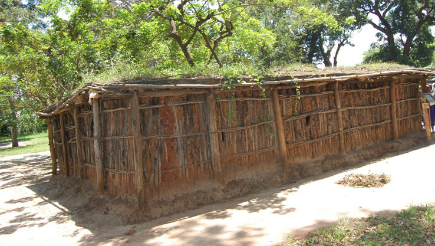
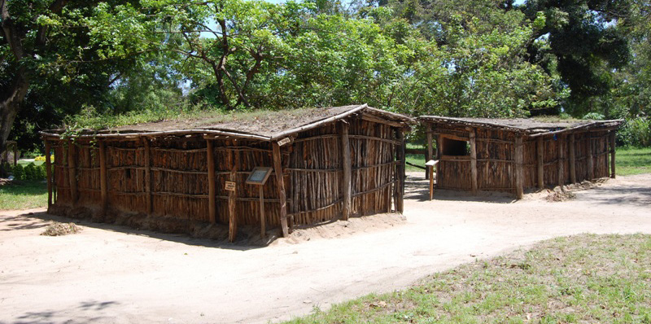

Nyumba ya tembe
Nyumba ya tembe ni aina ya nyumba ambayo paa lake ni tambarare. Paa hilo hufunikwa kwa nyasi na udongo. Nyumba hii hujengwa kwa kutumia fito, udongo na nyasi. Baadhi ya jamii za Kitanzania zinazotumia nyumba hii ni Wagogo, Wanyaturu, Wanyiramba, Wasandawe na Wanyisanzu.


Maswali
Jibu maswali yafuatayo kwa kuandika, kutumia kibodi au Breli.
Shughuli ya tatu
Chunguza picha, video, nyumba halisi au mchoro wa mguso wa nyumba ya tembe uliotolewa na mwalimu, kisha chora, taja au eleza nyumba hiyo kwa kutumia mchoro, maandishi, kibodi au Breli.